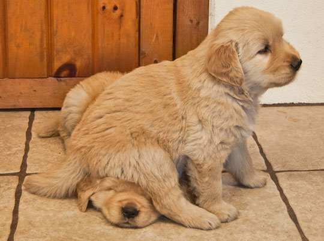
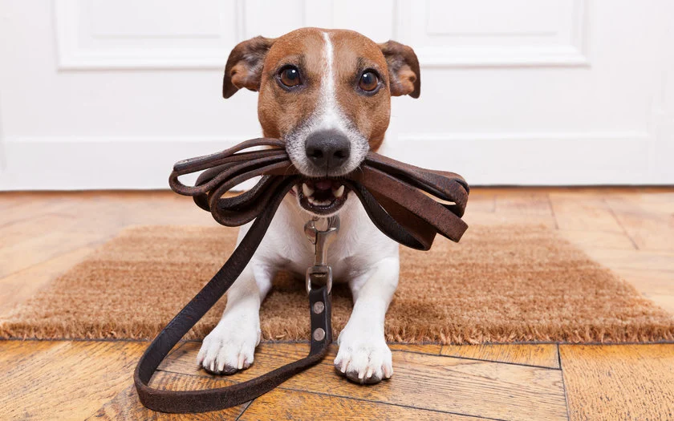

Quando pensamos em adestramento vem à nossa mente a imagem de Marley "atacando" a treinadora no filme "Marley e Eu" certo?
Apesar de algumas raças necessitarem uma atenção especial em seu treinamento, a maioria dos cachorros podem ter um adestramento tranquilo e dentro de casa se o processo for feito corretamente. Entretanto, sabemos que o processo leva tempo e exige muito de todos da casa para garantir uma educação permanente.
Por isso separamos algumas dicas no portal que irá ajudar na educação básica do seu pet, para que haja uma convivência saudável no lar.
A importância da repetição

Não se esqueça de que o adestramento de cães é um treinamento e, por isso, é essencial repetir diversas vezes cada ação com o cachorro até que ele aprenda o que você deseja – seja sentar, dar a pata, deitar ou ficar.
Mas, durante o adestramento de cães, faça sempre treinos curtos, com descansos para intercalar, evitando que o cão canse e perca a atenção — o mesmo que acontece com nós, humanos, quando passamos muito tempo fazendo a mesma atividade!
Sistema de recompensas
Diversas coisas podem ser consideradas uma recompensa para os cães. Por exemplo:

Essas recompensas são grandes aliadas do adestramento de cães: elas incentivam o pet a fazer os movimentos que você quer durante o início do processo, até que se tornem hábitos comuns do cachorro.
Em muitos casos, essas recompensas são o suficiente para ajudar no adestramento de cães. Mas, se achar necessário, petiscos saudáveis ou frutas permitidas para cachorros podem ajudar.
Se seu cão for alérgico ou não puder sair da dieta, como aqueles que sofrem de obesidade canina, use os grãos da própria ração como aperitivo.
Antes de começar o adestramento de cães, lembre-se: as recompensas devem ser rápidas para evitar que o cachorro perca o foco no treinamento. Assim como longos elogios tiram o foco do pet e prejudicam o aprendizado, os petiscos devem ser pequenos, a ponto de serem engolidos rapidamente, para que não seja necessário parar a atividade para que ele mastigue.
Truques
Com algumas dicas dadas sobre o processo de adestramento, também trouxemos alguns truques simples que você pode ensinar ao seu pet. Segue abaixo a lista com alguns deles.
Sentar
A reação natural de muitos cachorros é sentar, como se estivessem esperando a comida. Se isso acontecer, recompense com palavras de incentivo ou com o aperitivo.
Caso o pet não sente depois de cheirar o petisco, existem outras formas de ensinar o cachorro a sentar com o adestramento de cães. Ainda com o petisco, mova a sua mão até a parte de trás da cabeça dele. A intenção é que o cachorro acompanhe o movimento da mão e sente. Quando ele sentar, não esqueça de dar a recompensa.
Mesmo assim, alguns pets podem não entender. Para mostrar ao cachorro que ele deve sentar, empurre bem de leve o peito do cão ao mesmo tempo que pressiona o bumbum para que ele sente. Em seguida, dê a recompensa.
Durante o adestramento de cães, repita a palavra-chave que deseja, como “senta!”, para que o cãozinho se acostume ao comando, e pronto: você aprendeu como ensinar o cachorro a sentar!
Esse é o primeiro comando que deve ser ensinado. Serve de base para os outros, além de ser o mais fácil de ensinar porque é algo natural e que ele já faz diariamente.
É sempre importante comemorar a conquista com frases de incentivo, como “muito bem!”.
Dar a pata
E não se esqueça de elogiar o pet e recompensá-lo com carinho também. Como ele vai tentar pegar o aperitivo de qualquer jeito, assim que colocar a pata sobre a sua mão, já demonstre que ele fez o gesto certo e ofereça a recompensa. E não se esqueça de repetir a palavra-chave que escolher durante o adestramento de cães também.
Como ensinar o cachorro a dar a pata é um processo demorado, assim como muitos outros truques de treinamento, tenha paciência e nunca brigue com o seu pet caso ele demore a aprender o comando.
Deitar
E não menos importante, ofereça a recompensa! Você também pode usar palavras-chave para que o cão entenda o comando sem precisar do petisco no futuro. Portanto, quando ele estiver abaixado e praticamente deitado, diga “deita” e recompense-o pela conquista.
Lembre-se que cada animal tem uma personalidade e por isso alguns cães podem levar mais tempo do que outros para aprender truques. Porém, todos eles são capazes de aprender. O importante é ter paciência e respeitar o tempo de cada um.
Além disso, o adestramento é uma construção diária e o tutor deve dedicar pelo menos 10 minutos do seu dia ao ensinamento do pet, para que haja uma fixação dos truques que foram aprendidos.
Ficar
E não se esqueça de oferecer a recompensa.
Ensinar o cão a ficar é, mais do que tudo, um exercício de autocontrole. Portanto, depois de fazer isso por alguns minutos, faça o gesto de “pare”, mostrando a palma da mão para cachorro e diga a palavra-chave “fica” novamente e vá se afastando aos poucos.
Pode ser necessário repetir a palavra de comando durante o adestramento de cães durante o afastamento para que ele entenda que deve ficar parado. Para isso, você pode alternar a palavra-chave com frases curtas de incentivo, como “bom garoto” ou “muito bem”.
Em seguida, volte e repita o processo para ensinar o cachorro a ficar. Se o peludo tentar te seguir, volte e faça ele retornar ao ponto inicial, e repita todo o processo de adestramento de cães. Até ele dominar o comando completamente, aumente gradativamente o tempo que ele precisa ficar parado.
Chamar
E como em todos os outros passos do processo, elogie o pet e recompense-o com carinho também. Como você pode ver, apesar de usarmos dicas de adestramento, ensinar os cãezinhos requer tempo, dedicação e principalmente muita paciência.
Realizar o adestramento de cães auxilia no comportamento do animal quando o tutor está ou não presente, facilitando, por exemplo, o sentimento de separação na ausência do mesmo.
Além destes comandos básicos, disponibilizamos alguns vídeos que podem auxiliar no processo logo abaixo.